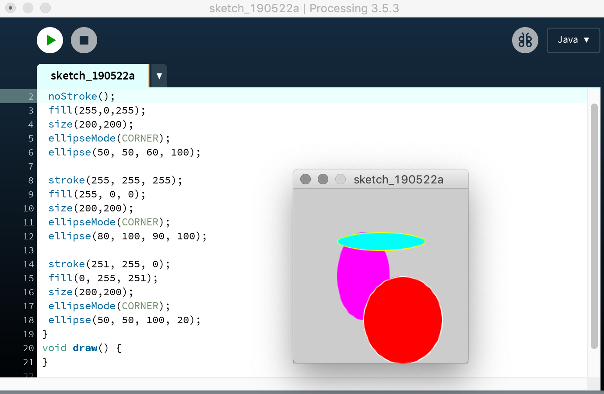
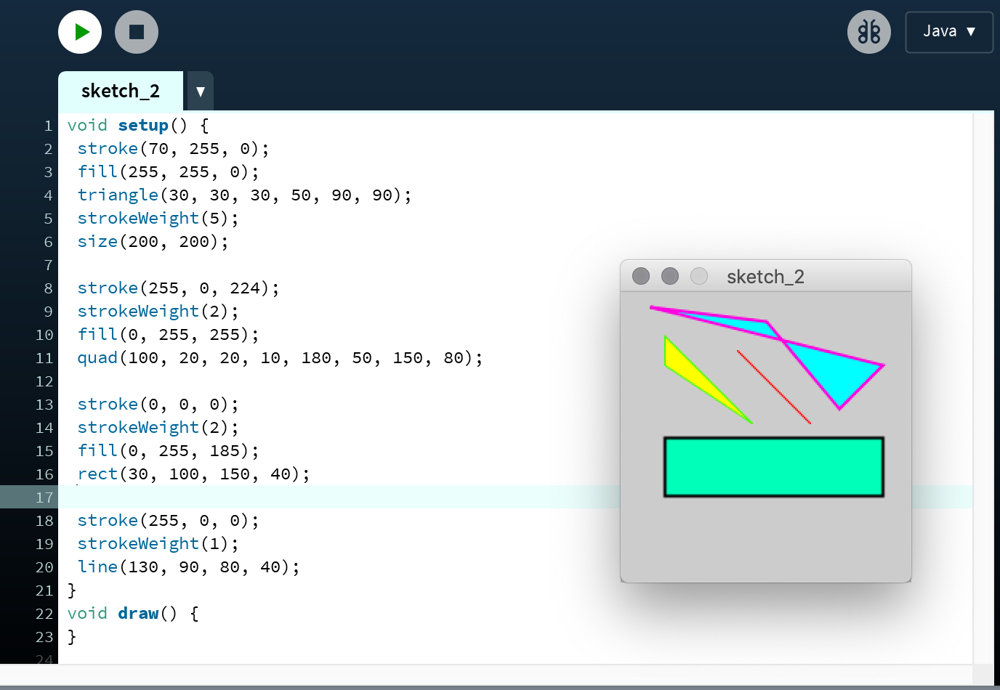
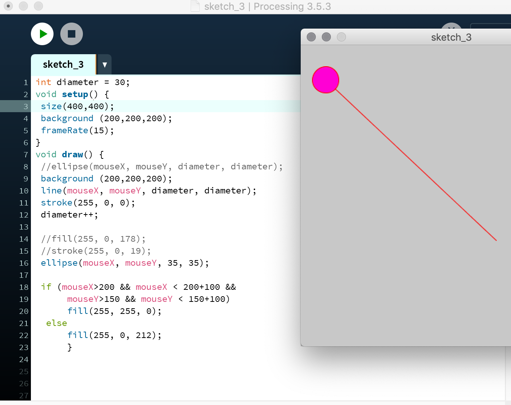

Tijdens het werken met de Arduino hadden we al een beetje kennis gemaakt met het programma processing. Voor deze opdracht moesten we hier weer mee werken. De eerste opdracht moesten we 3 verschillende rondjes maken met verschillende kleuren. Achter ‘stroke’ en ‘fill’ kan je een eigen kleurcode zetten wat er voor zorgt dat de lijn en het binnenste een kleur krijgt. Achter ‘ellipse’ kan je de x en y as en de breedte en hoogte aanpassen. De volgende opdracht was het maken van verschillende vormen en deze ook weer verschillende kleuren geven. Dit ging op dezelfde manier als de cirkel, maar hebben sommige vormen meer informatie nodig. Zo moet je bij de ‘quad’ (paars blauw) 3 verschillende x en y assen aangeven voor al de 4 verschillende punten. Opdracht 3 was een opdracht waarbij animatie moest worden gebruikt. De lijn volgt de muis als je die over het scherm beweegt, zo ook de cirkel waardoor het lijkt als die aan de lijn vast zit. Door middel van een if en else heb ik ervoor gezorgd dat de cirkel andere kleuren krijgt als de muis op een bepaald punt is.    De volgende 3 opdrachten werkte we met de webcam. Door gekregen bestand te installeren kregen we bij het openen van de webcam een groen vierkant om ons heeft heen. Dit heb ik toen veranderd in een cirkel door ‘rect’ naar ‘ellipse’ te veranderen. Wanneer dit was gelukt heb ik de binnen kant gevuld met een rode kleur door de zin ‘fill(255, 0, 0);’ toe te voegen. Fill zorgt ervoor dat het rondje gevuld word, en de cijfers erachter zijn de kleurcode. En door ‘frontalface’ te veranderen in ‘nose’, stond het rondje uiteindelijk op de neus. Uiteindelijk was er nog een bestandje wat we moesten installeren. Dit zag kleur. Door de kleuren aan te tikken, sloeg hij die op en liet hij alleen dat in het zwart/wit beeld zien. De laatste opdracht kregen we geprinte papiertjes, hier moest de webcam een 3d figuur op projecteren. Bij mij werkte hij bij een van de afbeeldingen niet, vandaar dat ik er 1 heb.